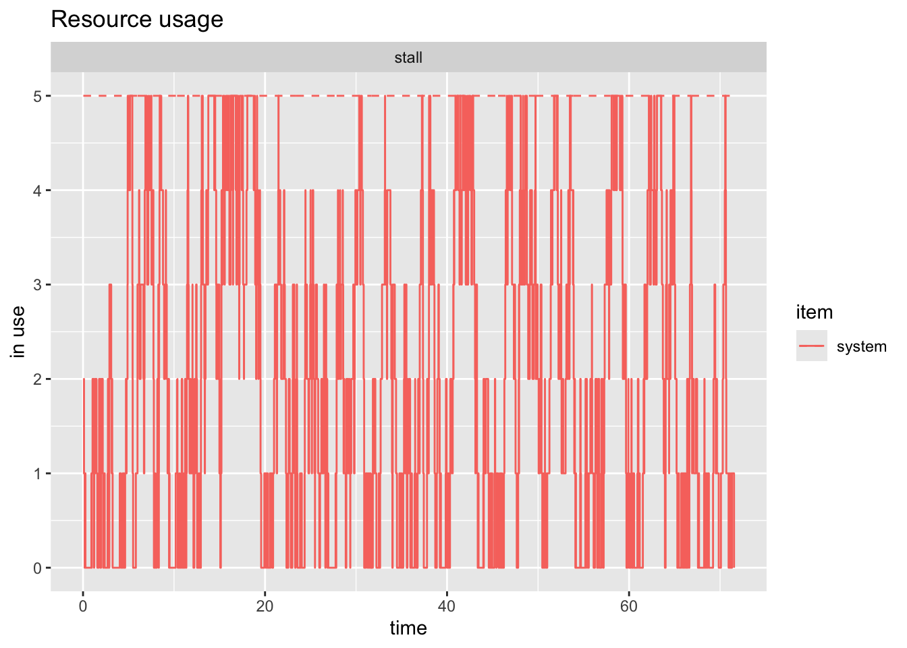

library(tidyverse)
library(knitr)
library(simmer)
library(simmer.bricks)
library(simmer.plot)HW3 Solution
IE384 Simulation Models in IE
1 Problem
2 Information
- 5 stalls
- Taxis arrive at 8/hr
- Customers arrive at 10/hr
- Customers leave if there’s no taxis
2.1 Questions
- What is the probability of finding one or more taxis waiting at the stand?
- Determine the average number of taxis at the stand.
- What is the average number of taxis waiting at the stand?
3 Model
It is important to separate what is called a customer and what is actually a customer when building these kinds of models. Things we can ask to help understand are?
- What is the limited resource?
- What is being consumed or occupied?
- What/who is doing the consuming?
In this case, taxis are what we want to model. We are interested in how full the taxi stand is at any given time. The customers are what make the taxis go away. The taxis line up in a single queue where the first spot is where loading and unloading occur and there are four waiting spots behind it.
That first spot represents the “server” spot. This is where the taxi arrives and stays for some random time until a customer appears. It is tricky and a little strange to think about because there’s literally not a customer there, but the time until a customer appears is how long the taxis wait. Maybe you can think about it like you are at a hotel and you go down to the front desk for a simple question but there’s nobody there. You keep waiting until the clerk returns and as soon as they do you ask your question and you’re on your way.
The same thing applies here where the taxi waits and waits for the customer. We don’t need to model and track the customers, we just need a way to represent how long it will be until one shows up.
3.1 Load Packages
3.2 Problem Data
This information is taken straight from the problem statement.
n_stalls <- 5
loading_positions <- 1
# function to sample the interarrival time of taxis
taxis_arrival <- function(n=1) {
rexp(n, rate = 8)
}
cust_arrival <- function(n=1) {
rexp(n, rate = 10)
}3.3 Create Model
For when we get more advanced situations, it is best practice to create an empty simulation environment and then add the details
# best practice is to first i
sim <- simmer("taxi stand")First I’m adding the constrained resource, the number of stalls. Note that I have the number of servers set with capacity = loading_positions and then I am restricting the queue size to be the total number of stalls minus the loading stalls. For this, it simply means 5 stalls - 1 loading stall = 4 stalls behind the loading.
sim |>
# this is where people load
add_resource("stall",
capacity = loading_positions,
queue_size = n_stalls - loading_positions)simmer environment: taxi stand | now: 0 | next:
{ Monitor: in memory }
{ Resource: stall | monitored: TRUE | server status: 0(1) | queue status: 0(4) }The trajectory is very simple. As mentioned before, note that the “seize, timeout, release” can be accomplished the exact same as visit from simmer.bricks.
taxi_traj <- trajectory() |>
# takes one unit of the stall
seize("stall", 1) |>
# samples the cust_arrival distribution
timeout(cust_arrival) |>
release("stall", 1)
# note this is the same as:
# visit("stall, cust_arrival)
sim |>
add_generator("taxi", taxi_traj, taxis_arrival) # samples the time between taxi arrivalssimmer environment: taxi stand | now: 0 | next: 0
{ Monitor: in memory }
{ Resource: stall | monitored: TRUE | server status: 0(1) | queue status: 0(4) }
{ Source: taxi | monitored: 1 | n_generated: 0 }I prefer to always reset the model before running it as shown here:
sim_time <- 72
reset(sim) |> run(sim_time)simmer environment: taxi stand | now: 72 | next: 72.0651127564385
{ Monitor: in memory }
{ Resource: stall | monitored: TRUE | server status: 0(1) | queue status: 0(4) }
{ Source: taxi | monitored: 1 | n_generated: 605 }And we can get the tables of results as shown here:
taxistalls <- get_mon_resources(sim)
taxis <- get_mon_arrivals(sim)plot(taxistalls, steps = TRUE, items = "system")

4 Answers
4.1 Question 1
What is the probability of finding one or more taxis waiting at the stand?
If you open taxistalls you see that we have a pretty constant amount of data. That is there is no big gaps. So we could be lazy and just take the average number of times that taxistalls$system is greater than or equal to one. We use system because that is the number in the server spot and all taxis behind it.
q1lazy <- mean(taxistalls$system >= 1)The lazy result indicates there are one or more taxis 86.36 % of the time.
This is tempting but dangerous because it doesn’t account for how long the system was in that state. Think if there were only two data points in our simulation, one at 5 seconds and one at 6 seconds. At 5 seconds, there is one taxi in the system and at 6 seconds there is none for a simulation of 72 hours. If you do a simple average, you will determine there are 0.5 taxis in the system. Clearly the average should be essentially zero.
Two steps to properly account for this:
- Create a new row in
taxistallsrepresenting time 0 with no taxis
# create a zero row starting with a copy of the table
zero_table <- taxistalls[1, ]
# set each value to 0
zero_table[1, 2:ncol(zero_table)] <- 0
# bind the tibbles together
taxistalls <- bind_rows(
zero_table,
taxistalls
# this isn't necessary because I put the zero row first,
# but it's easy to make a mistake and better to just sort it again anyway.
) |> arrange(time) - Create a new column which gives the time between each row and the row after it
taxistalls <- taxistalls |> mutate(
# lead takes the value of the next row
# coalesce provides a default value for where there is no "next row"
# that is when we are looking at the last observation before the end of the
# simulation
duration = coalesce(lead(time), sim_time) - time
)Now we can easily get a time waited average. We could do this by getting all the duration of times where the value is one or more, or we could just do it for the case where it is zero and subtract
# we need to have an "observation" at time zero where nothing is in the system
time_zero_taxis <- sum(taxistalls$duration[taxistalls$system == 0])
proportion_zero <- time_zero_taxis / sim_time
proportion_1_or_more <- 1 - proportion_zeroNow we have the truly correct answer and as it turns out, it is significantly different than the simple average performed above.
The true probability of one or more taxis is 76.71 %
4.2 Question 2
Determine the average number of taxis at the stand.
We need to do the same time-weighted average as above.
avg_taxis <- sum(taxistalls$system * taxistalls$duration) / sim_timeThere are 1.99 taxis in the system on average.
4.3 Question 3
What is the average number of taxis waiting at the stand?
This question is (intentionally) a bit ambiguous. If you interpret it the same as the above, then that is fine as long as you’ve explained it. The other alternative is wondering how many taxis are in waiting positions 1-4 (i.e. not in the loading zone). In that case, we still do a time waited average.
# now for this interpretation we use the queue
waitng_taxis <- sum(taxistalls$queue * taxistalls$duration) / sim_timeThere are 1.22 taxis waiting behind the loading position.